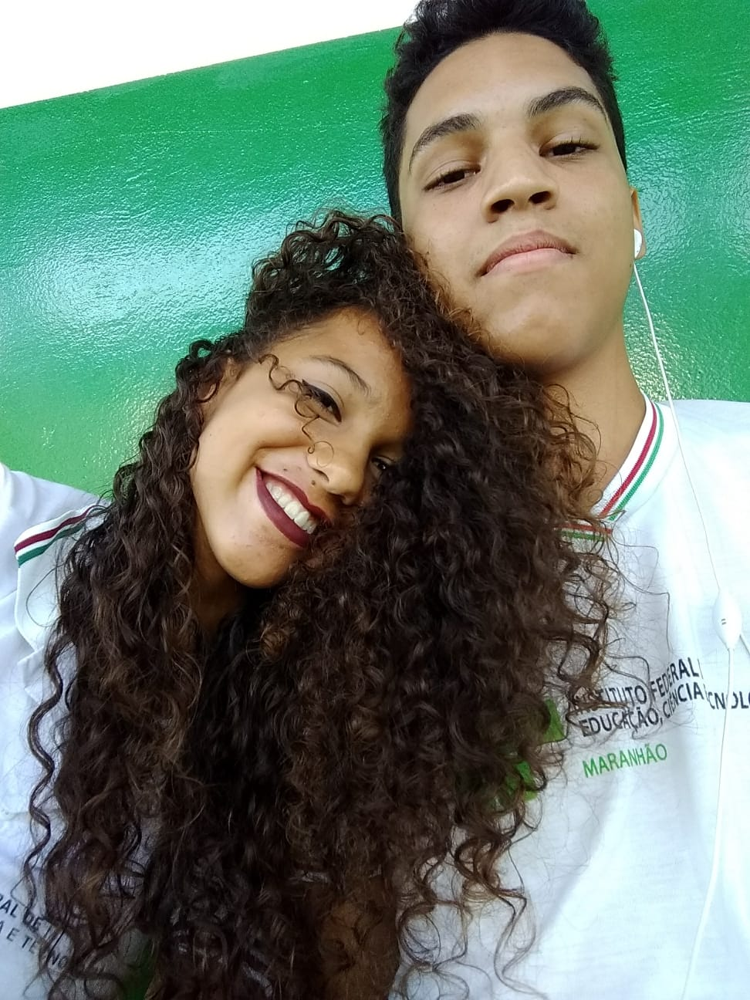
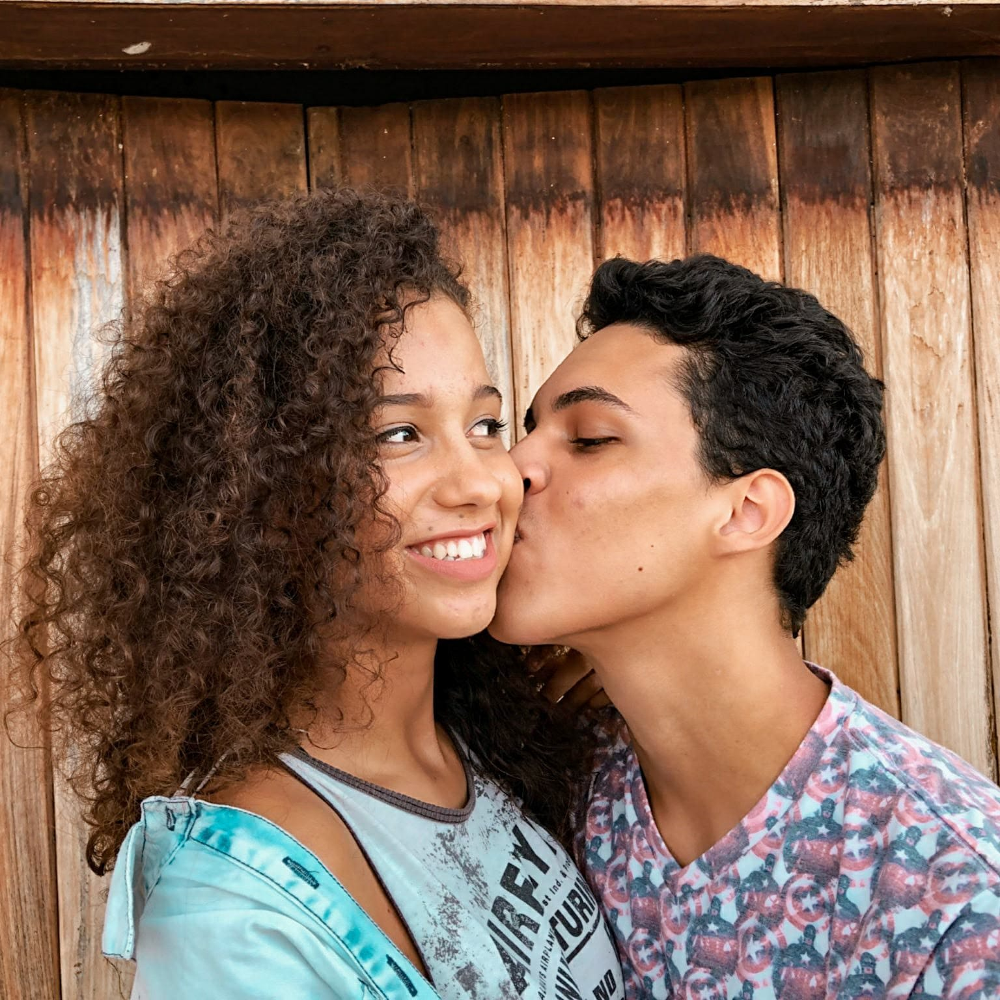
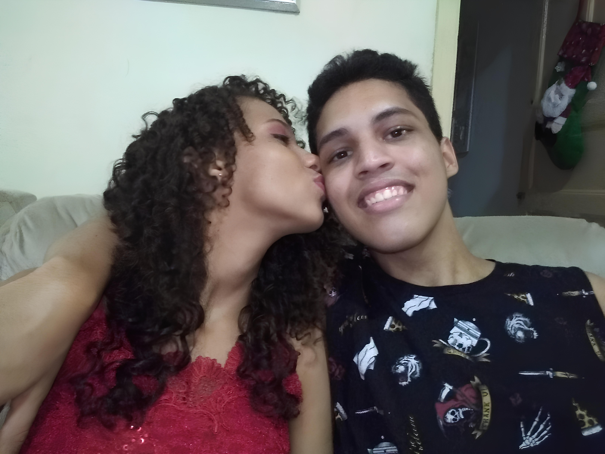
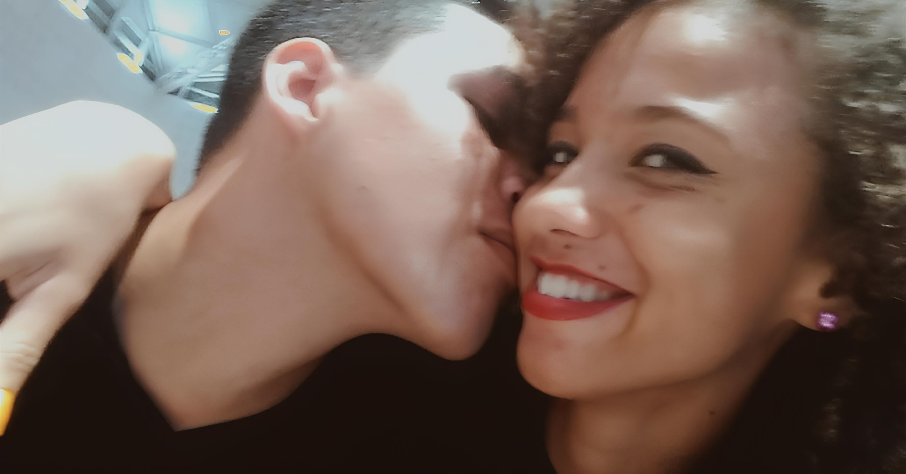
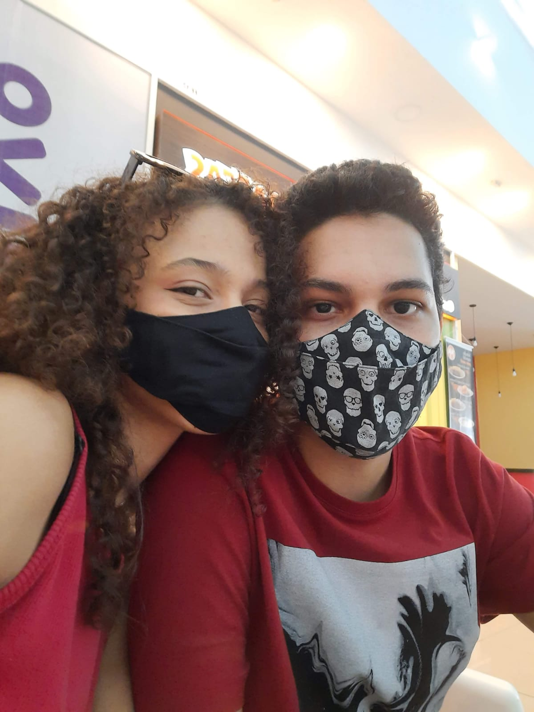
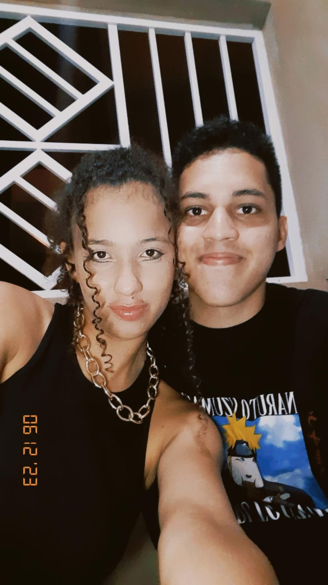
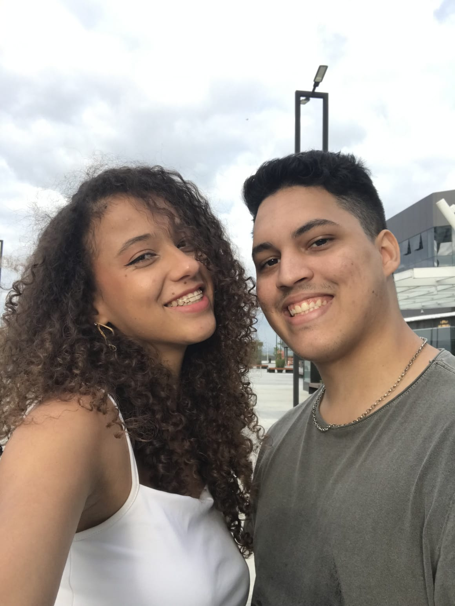
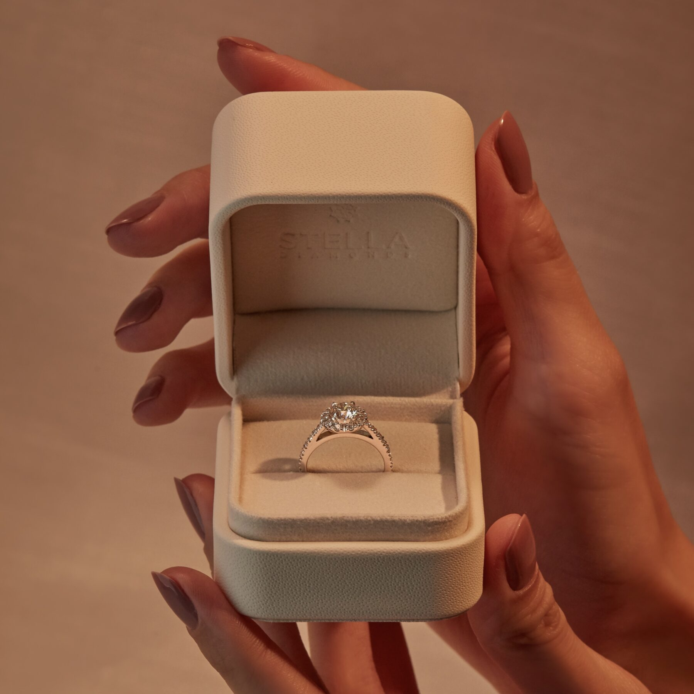

Uma Carta Para Você
Meu amor,
Desde o dia em que você entrou na minha vida, tudo mudou. O mundo, que antes parecia tão previsível, tornou-se mais colorido, cheio de possibilidades e com uma razão maior para ser vivido. Você não foi apenas um raio de sol em um dia nublado; você se tornou o meu céu inteiro.
Nosso começo foi... diferente, eu diria. As olhadas que te dava. Você sem entender nada. As primeiras conversas. Você ficando mais confortável ao meu lado, eu ficando mais confortável ao seu lado. As primeiras cartas, as primeiras fotos (de muitas). E aquele primeiro beijo? Ainda lembro do nervosismo correndo pelo meu corpo, como se o universo inteiro estivesse segurando a respiração por nós dois, junto com aquele céu estrelado. Nada planejado previamente, tudo acontecendo naturalmente. O ciúmes, o grande erro que cometi por não perceber que você era a certa desde o início, a nossa primeira vez, as fugas. Um início de relacionamento digno de filme, eu diria, mas foi o suficiente pra eu perceber rapidamente que estava completamente apaixonado por você, não tinha mais volta.
Eu amo como você transforma os momentos mais simples em algo inesquecível, amo como você consegue ser ao mesmo tempo a mulher que me faz rir com as coisas mais aleatórias possíveis e aquela que faz meu coração disparar só de pensar em você. Na verdade, eu amo tudo em você e como você mexe comigo. Nos dias em que o mundo pesa sobre meus ombros, você é a minha leveza. Nos momentos em que eu duvido de mim mesmo, você acredita por nós dois. Eu amo como você me desafia a ser uma pessoa melhor, não porque você exige isso de mim, mas porque estar ao seu lado faz com que eu queira ser alguém digno do seu amor e de você. Faz com que eu queira ter você pelo resto da minha vida, sempre ao meu lado. É nos seus braços que eu me sinto em casa, e é nos seus lábios que encontro a paz.
Cada momento ao seu lado é uma lembrança que guardo com carinho. Como esquecer a primeira vez que você se enrolou no meu braço e descansou a cabeça no meu peito? Eu nunca tinha sentido algo tão certo. Ou aquele dia em que ficamos na cama, falando sobre tudo e nada, planejando um futuro que, para mim, só faz sentido com você nele?
E as noites em que você me acalmou, quando eu estava à beira do caos? Você não apenas me escuta; você me entende de um jeito que ninguém mais entende. Há momentos em que você simplesmente olha para mim, e eu sinto que não preciso dizer nada, você já sabe. Assim como eu olho pra você e consigo sentir de alguma forma, lá dentro do meu ser que você precisa de um carinho, uma atenção.
Há momentos em que te observo quando você não percebe. Talvez seja enquanto você está fazendo algo, dormindo, ou quando está distraída, olhando para o nada. Nesses momentos, sou tomado por uma onda de felicidade tão intensa que chega a doer. Felicidade por você existir, por estar na minha vida, por ser exatamente quem você é. A mulher que eu escolhi amar para sempre!
Você me faz acreditar que o amor não é apenas um sentimento; é uma escolha diária. E todos os dias, eu escolho você. Escolho sua companhia, sua risada, suas manias que me fazem rir. Eu escolho os dias fáceis, em que tudo parece perfeito, e os dias difíceis, em que apenas estar ao seu lado já é suficiente para me fazer feliz.
Nosso amor não é apenas sobre os grandes momentos, como os aniversários e as datas marcantes. É sobre o jeito que você me acorda com um sorriso, sobre as mensagens bobas que trocamos durante o dia, sobre como você me abraça de um jeito que faz o mundo inteiro desaparecer. É sobre como você me faz sentir que sou o homem mais amado do universo, mesmo nas minhas imperfeições, várias delas.
Meu amor, se até aqui você não entendeu eu vou falar: o futuro que imagino sempre começa e termina com você. Quero envelhecer ao seu lado, contar nossas histórias para quem quiser ouvir, e criar novas histórias que só nós dois entenderemos. Quero estar ao seu lado em todos os momentos importantes e nos pequenos também. Quero te amar de um jeito que te faça sentir que você é a pessoa mais especial deste mundo — porque você é.
Eu te amo de um jeito que vai além do que posso explicar. Você é a minha melhor amiga, minha parceira, minha confidente, meu tudo. Não há parte da minha vida que não seja melhor porque você está nela.
Então, hoje, mais uma vez, eu quero te prometer algo. Quero prometer que estarei aqui, sempre. Que continuarei te amando nos dias bons e ruins, que vou te apoiar em cada sonho, e que farei de tudo para que você nunca tenha dúvidas do quanto é amada.
E prometo continuar te amando assim — intensamente, profundamente, loucamente — por todos os dias da minha vida. Porque, meu amor, você é meu sonho, minha realidade e tudo o que eu sempre quis.
Você é, e sempre será, a melhor escolha que já fiz na minha vida.
Com todo o amor que existe em mim,
O amor da sua vida
Nossa História
-

Nosso início. O ano do nosso primeiro beijo e também do meu maior erro. Escolhi outra pessoa, mas percebi que você era única. Desde então, somos inseparáveis.
-

O ano da nossa primeira vez. Oficializamos nosso relacionamento.
-

O ano das mudanças. Começamos em cidades diferentes, mas terminamos juntos, enfrentando tudo e todos.
-

A pandemia nos separou fisicamente, mas fortalecemos nosso amor à distância. Entre ligações e saudade, descobrimos o quanto éramos fortes juntos, mesmo longe.
-

Mais um ano de distância, mas também de conquistas. Lidamos com desafios como ciúmes e desconfianças. Mas o amor prevaleceu.
-

Voltamos a morar juntos e nos conectamos mais do que nunca. Mesmo com seus compromissos, cada momento ao seu lado era especial, mesmo que os planos nem sempre saíssem como esperado.
-

Um ano de altos e baixos. Conquistas e perdas. Estivemos juntos lado a lado em cada momento, fosse ele de dor ou alegria.
-

Um ano de saudades e encontros rápidos. Fizemos nossa primeira viagem juntos. Continuamos juntos, superando mais um ano desafiador.
-
